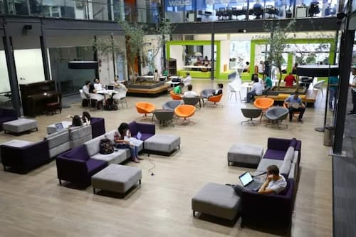
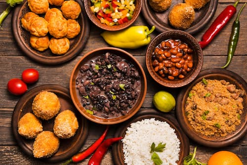

A região metropolitana concentra alguns dos maiores hubs de inovação do continente (como San Pedro Valley e ecossistemas na Faria Lima/Vila Olímpia), atraindo investimentos para tecnologia e novos negócios.

Com bairros temáticos e influência de mais de 70 nacionalidades, SP é uma referência mundial em alta gastronomia, teatro, arte de rua e grandes eventos (como a SP Arte e a Fórmula 1).
